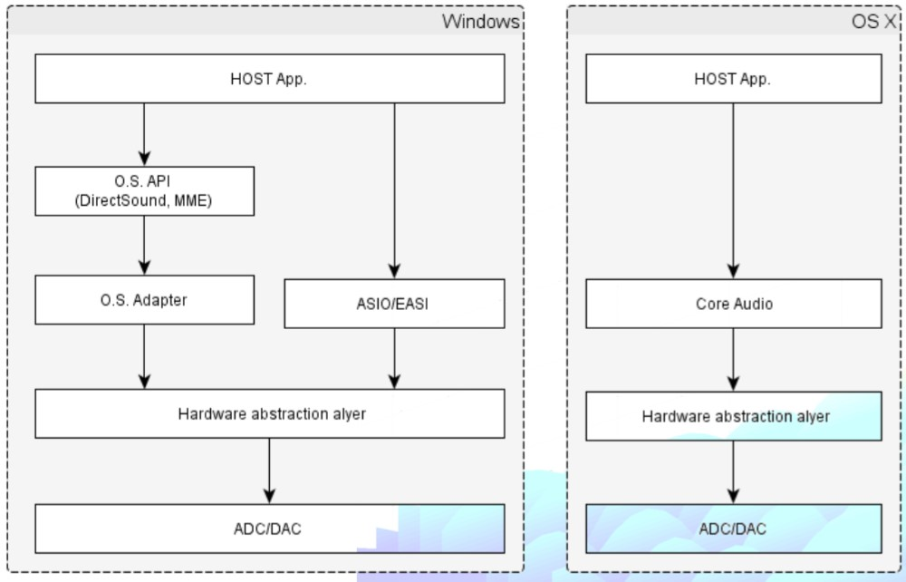

Benvenuti nel corso di produzione musicale sul DAW Ableton Live 11.
In questo corso tratteremo le tecniche di manipolazione audio nelle sue accezioni più generali, focalizzandoci sulla produzione audio e sull'elaborazione di materiale sonoro.
Il corso si strutturerà in tre fasi:
1- Imparare a conoscere e comprendere l'uso del DAW (Digital Audio Workstation) nel suo complesso più generale.
2- Conoscere il contesto d'uso dello standard VST2/VST3 e degli effetti messi a disposizione da Ableton.
3- Familiarizzare con l'uso del DAW e comprenderne le meccaniche avanzate.
Per Digital Audio Workstation intendiamo qualunque sistema elettronico progettato per la registrazione, il montaggio e la riproduzione dell'audio digitale; ve ne sono diversi che supportano diversi sistemi operativi: Audacity, Audition, Sonarworks, Cubase, etc.
Ableton Live 11 supporta sia l'ambiente Windows che l'ambiente Mac.
Ogni DAW lavora secondo il seguente schema di processing audio attraverso il quale il software si interfaccia con la scheda audio (ADC se converte segnale analogico in digitale e DAC se converte segnale digitale in analogico).

Ogni DAW si struttura in singoli canali Mixer in cui è possibile fare processing audio singolarmente.
Qual è il layout di Ableton Live 11?
Gli elementi base di Live sono le clip e possono essere di due tipi: un file audio o un pattern MIDI, che andranno poi a costituire una canzone completa.
Una finestra si divide a livello visivo in più parti:
- i menù superiori di impostazioni del DAW e del progetto
- la sezione tracce e mixer
- il _Browser_ (a sinistra)
- la vista _Dettaglio_
- la finestra _Info_
La parte più importante di un un progetto, o _Live Set_, è la sezione centrale contenente le tracce del progetto.
Esistono 3 tipi di tracce:
- tracce midi
- tracce audio
- tracce di ritorno
A queste si aggiunge inoltre la traccia master, attraverso cui passano tutto l'audio delle precedenti tipologie di tracce prima di risultare pronte per l'esportazione.
La sezione centrale si divide in:
- Arrangiamento: una zona di lavoro su cui è possibile piazzare le clip lungo una linea temporale musicale.
- Sessione: una tavolozza vuota orientata alla composizione e riproduzione "in tempo reale" per le clip.
Ogni clip di sessione ha il proprio pulsante di riproduzione che consente di avviare le clip assieme o separate in qualsiasi momento in qualsiasi ordine.
I due ambienti possono essere intercambiabili:
- premendo il pulsante di registrazione durante la riproduzione delle clip è possibile registrare il materiale presente nella Sessione. La riproduzione dell'Arrangiamento non riprende finché non viene premuto il tasto rosso in alto nell'ambiente Arrangiamento "_Torna all'arrangiamento_".
- cliccando sulla clip nell'Arrangiamento è possibile importarla nella Sessione cliccando su "_Consolida tempo in una nuova scena_".